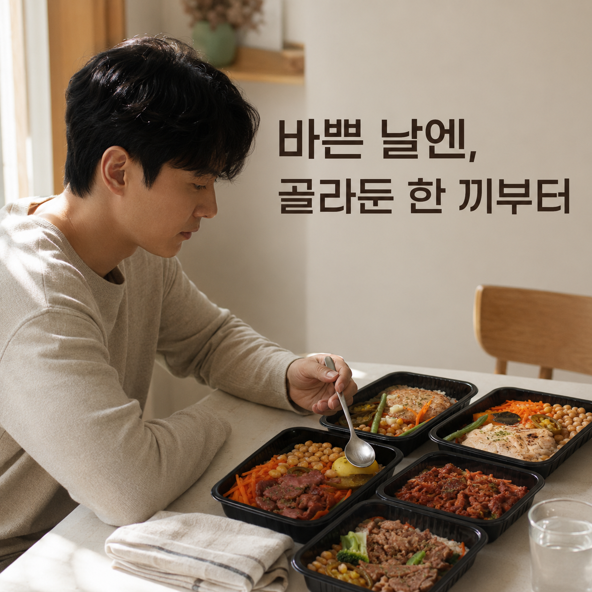
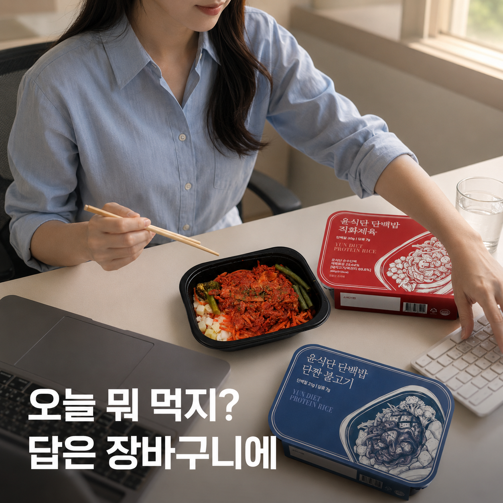
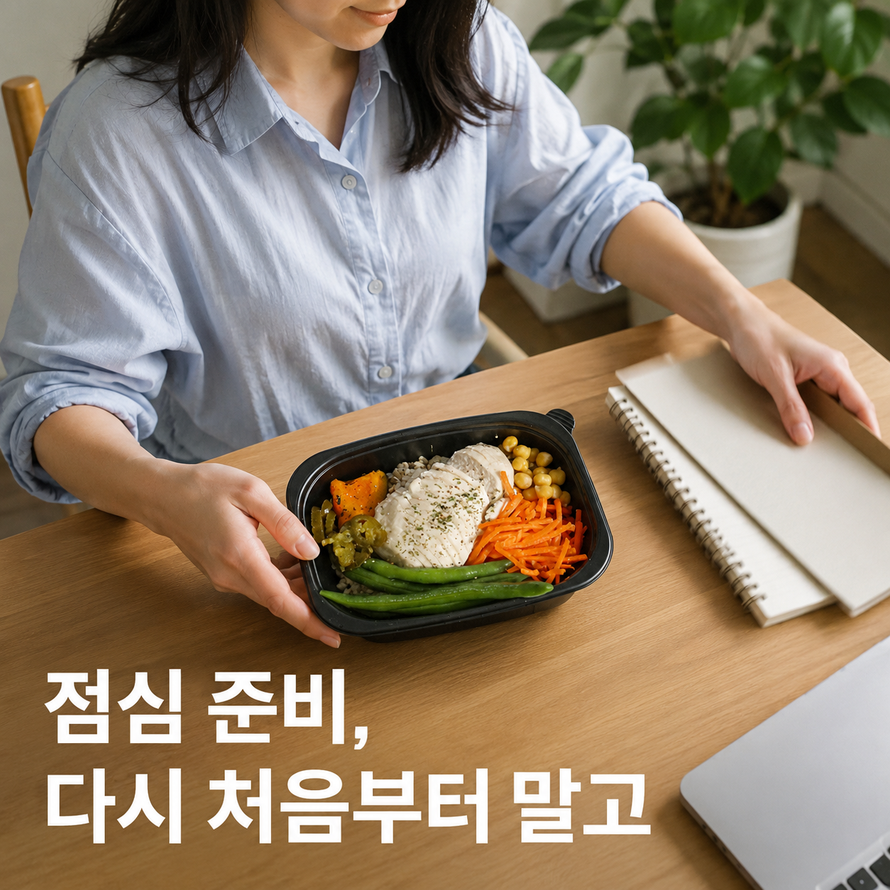
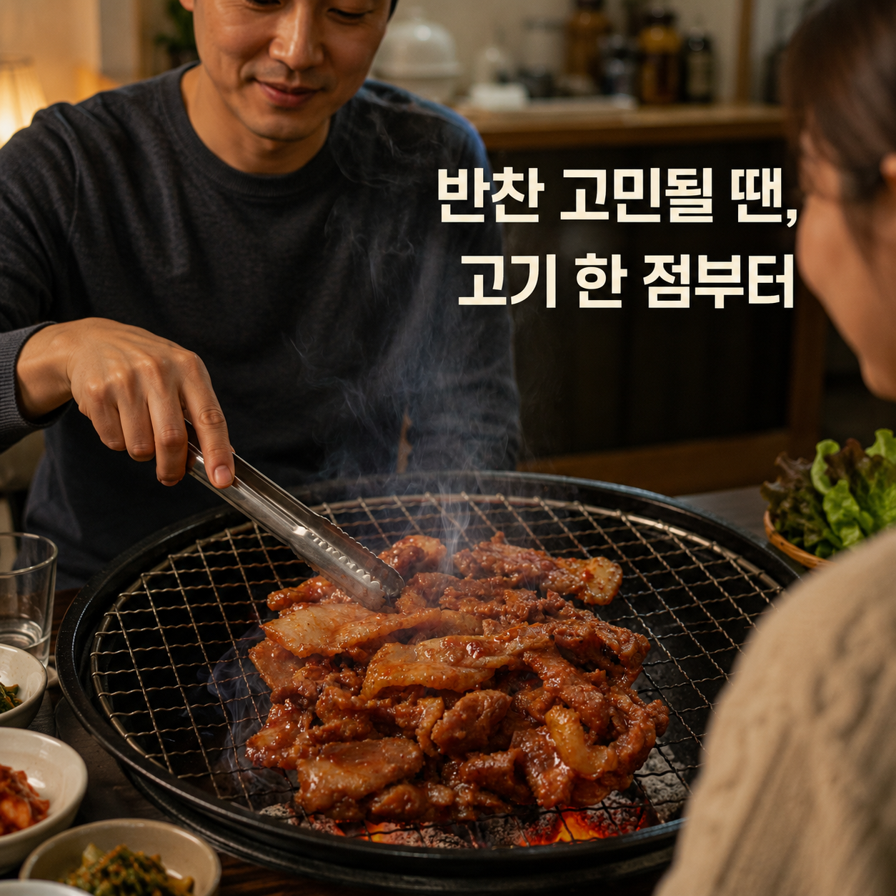
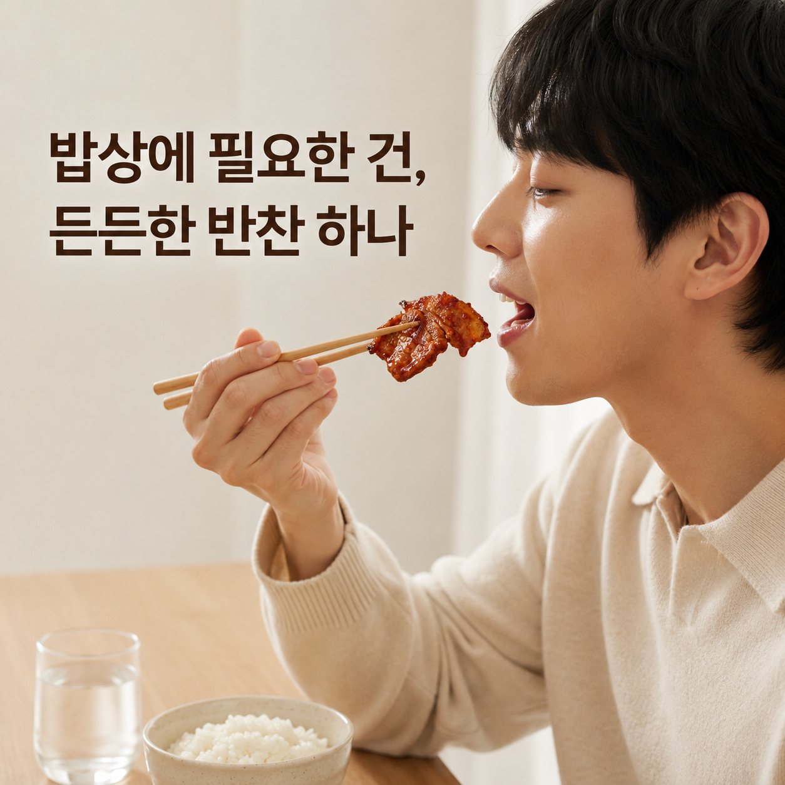
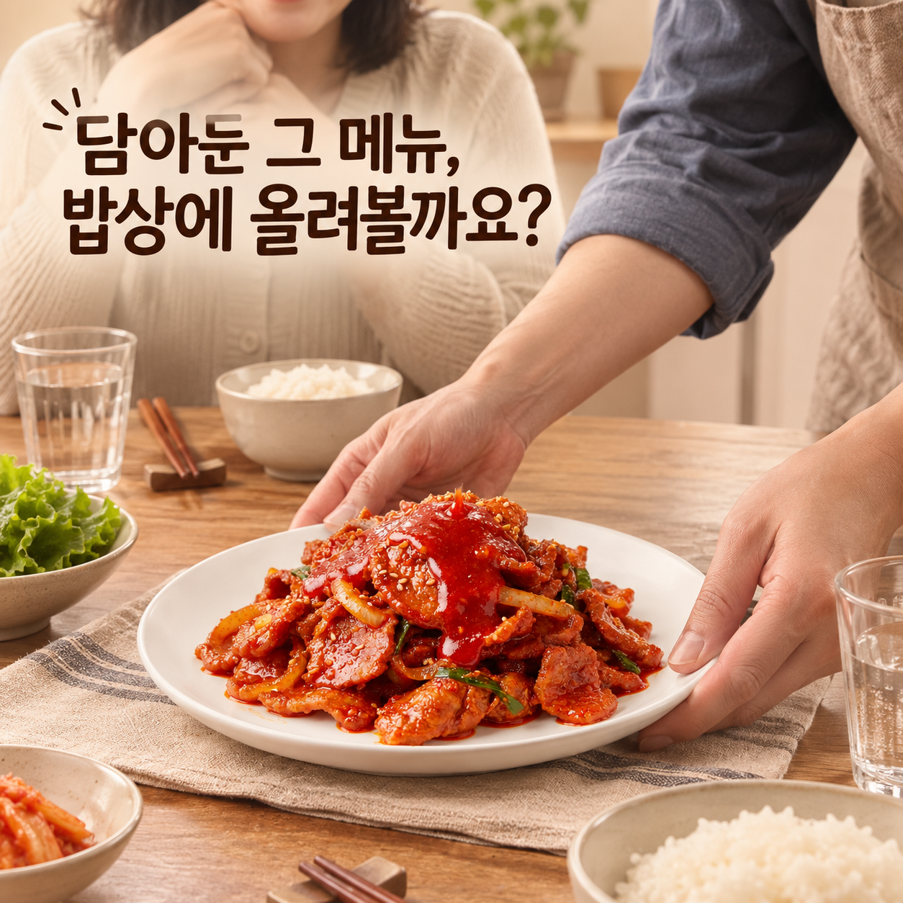
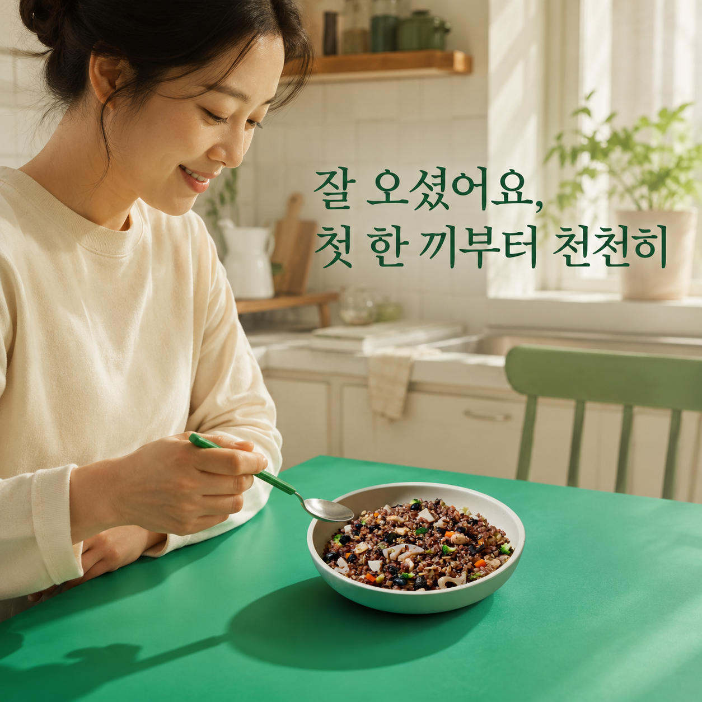
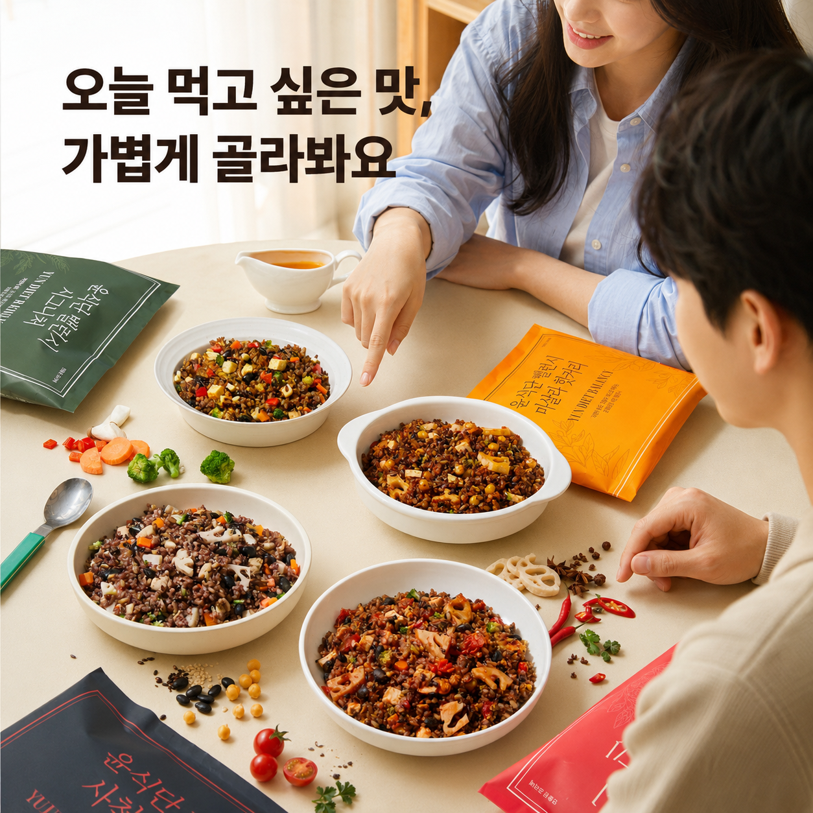
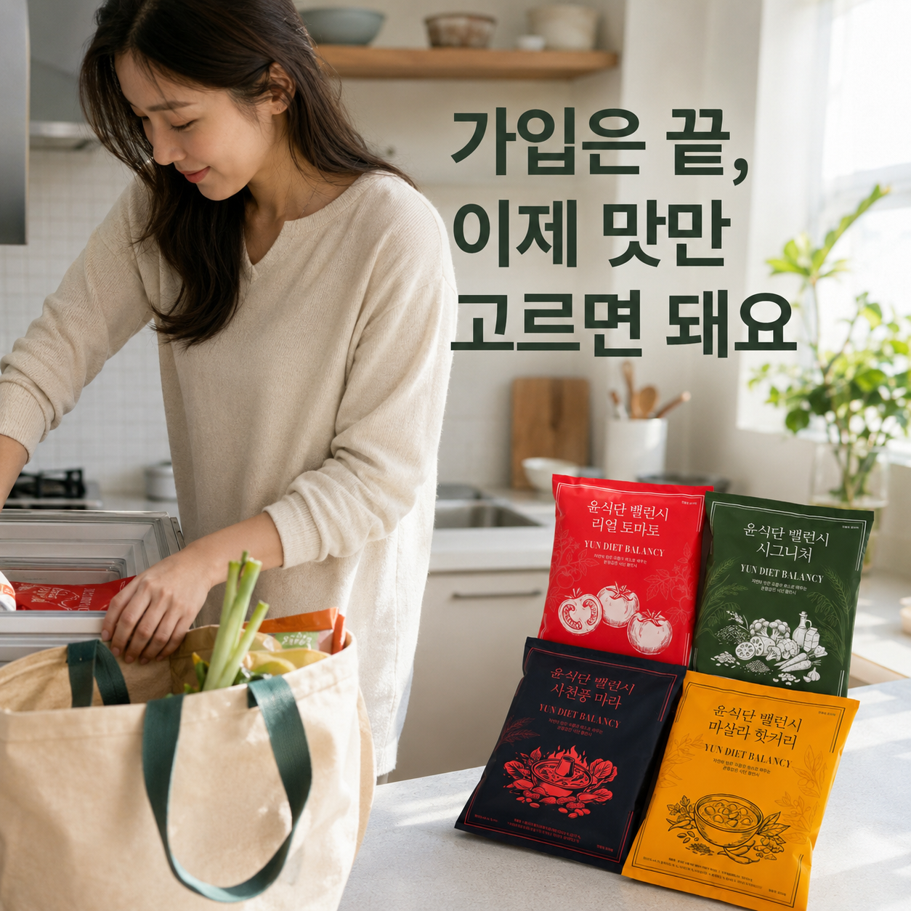

A안바쁜 날 공감형

마이노멀의 생활 장면 중심 구조와 라라스윗의 짧은 감각 훅을 원칙으로만 참고해, 윤식단의 사람 친화형 CRM 소재를 새로 구성했습니다. 이미지, 메시지 카피, 상품 연결, 랜딩을 한 화면에서 비교하세요.
바쁜 하루 중 한 끼 결정을 미룬 순간



밥은 있지만 곁들일 반찬이 떠오르지 않는 순간



가입은 했지만 어떤 메뉴부터 볼지 모르는 순간


